PARALLAX / CONCEPT REFERENCE
Make the science visible.
Authored vector compositions, readable signs and physical proposals. Text equivalents and source labels accompany every figure. Room P4-D is conceptual; actual installation and occupied-room performance remain unvalidated.
Read the packet without images
All figure meanings remain in the accompanying text.
ART-01
From signal to understanding
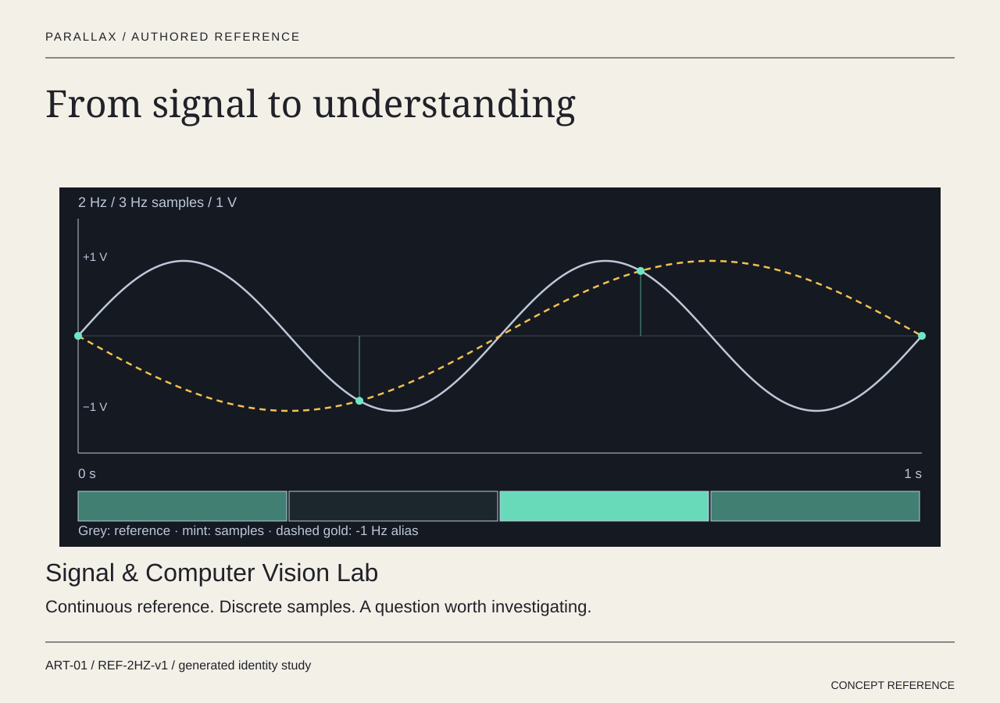
Visual job
Establish the lab's identity through continuous waveform and discrete sample rhythm.
Text reference
A 2 Hz ideal reference becomes four samples over one second at 3 Hz. This is generated art, not acquisition.
Scale and use
Entrance identity study · 1280 × 900 vector master; viewing-distance and mounting review pending

ART-02
A rhythm above the room
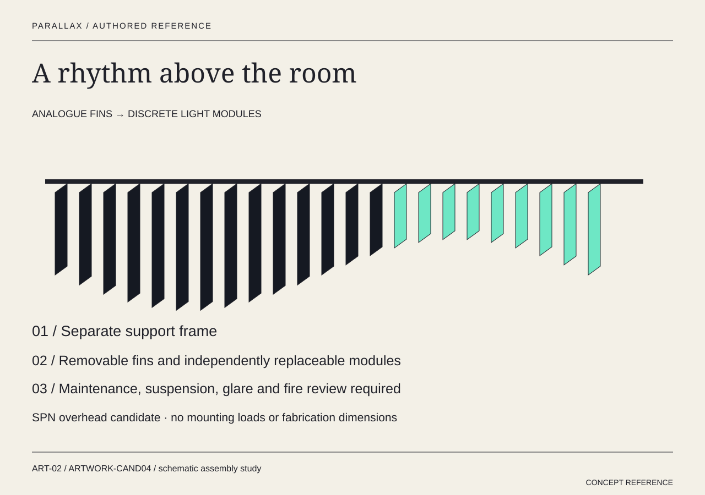
Visual job
Develop the existing segmented-fin installation with a readable assembly and light study.
Text reference
Waveform-shaped fins resolve into discrete illuminated segments. Separate frame, fins and replaceable light modules are candidates; no structure or photometry is certified.
Scale and use
Installation study · schematic assembly; no fabrication dimensions

ART-03
Read the conditions, keep the evidence
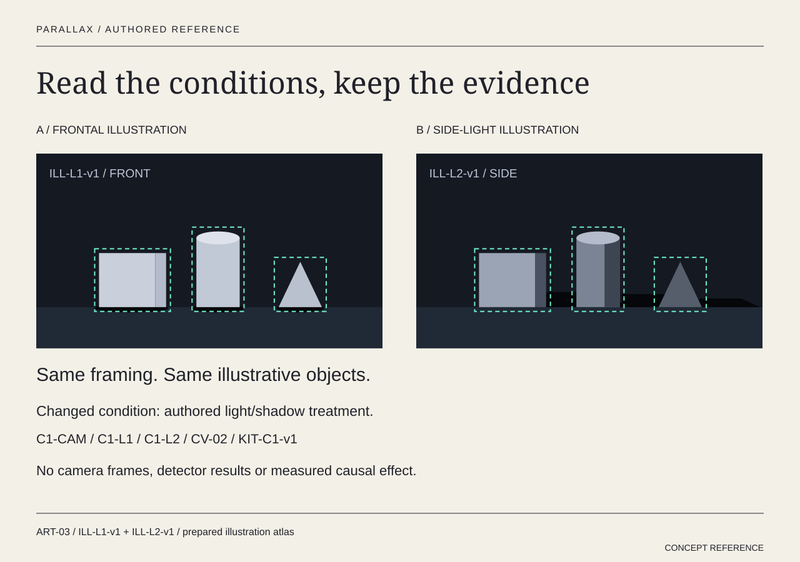
Visual job
Make aligned frontal and side-light illustrations readable with their source and condition labels.
Text reference
Both plates show the same illustrative objects and framing. Frontal light has short authored shadows; side light has longer authored shadows. No camera frames, detector accuracy or causal measurement is asserted.
Scale and use
Conditions atlas · aligned illustration plates with identical framing

ART-04-E01
Predict before sampling
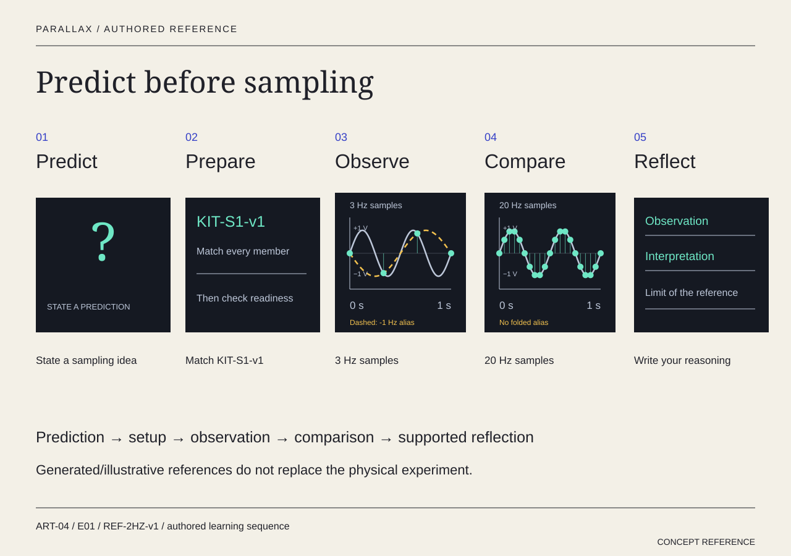
Visual job
Tell the E01 learning sequence through a restrained five-frame storyboard.
Text reference
Predict, prepare the signal kit, inspect 3 Hz samples, compare with 20 Hz samples, then write a supported reflection. The sampling model does not replace acquisition.
Scale and use
E01 storyboard · five illustrated steps and text equivalent

ART-04-E06
Change the light, own the interpretation
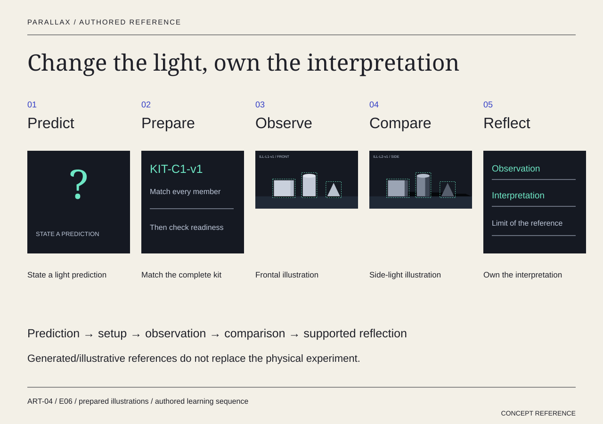
Visual job
Tell the E06 sequence while keeping illustration and student interpretation distinct.
Text reference
Predict, match the full kit, observe a frontal illustration, compare the side-light illustration, then reflect on what the illustration cannot establish.
Scale and use
E06 storyboard · five illustrated steps and text equivalent

ART-05
Every part belongs to the kit
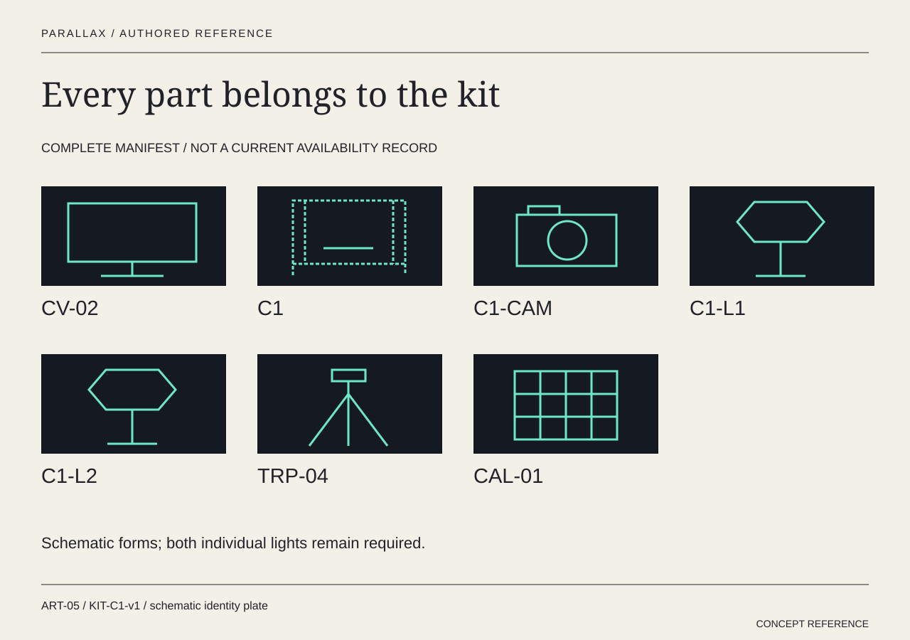
Visual job
Give each capture component its canonical identity without substituting an invented inventory.
Text reference
The capture kit includes CV-02, C1, C1-CAM, both C1-L1 and C1-L2, TRP-04 and CAL-01. Shapes are schematic and do not establish current availability or calibration.
Scale and use
Equipment illustration plate · canonical component labels

ART-06
One vocabulary from door to return
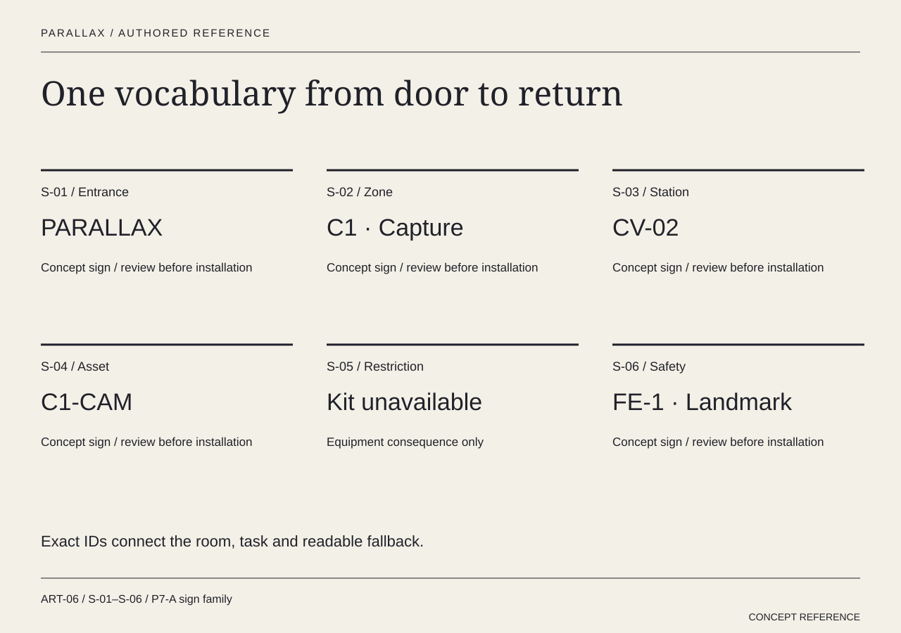
Visual job
Carry existing S-01–S-06 sign identities through entrance, zone, station, asset, restriction and safety touchpoints.
Text reference
Entrance identifies the subject; zone and station signs match the booking; the asset tag gives a typed ID; a restriction tag names only the equipment consequence; the safety reference points to posted local procedures.
Scale and use
Sign family · six individual vector studies; sizes/installation require local review

ART-07
Evidence first, interpretation second
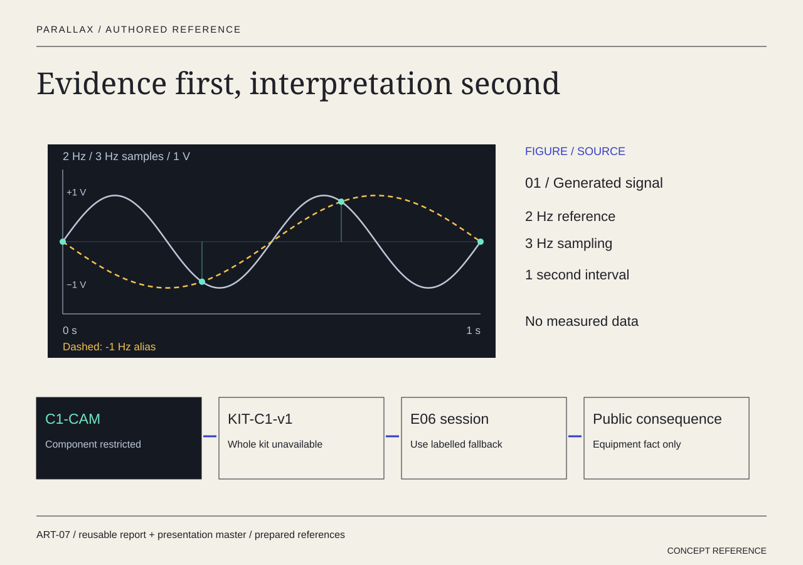
Visual job
Provide an authored report/presentation spread using a clear figure, caption and evidence hierarchy.
Text reference
The main generated signal figure is separated from the supporting camera-to-kit consequence diagram, source captions and limitations. This is a reusable visual master, not the final U10 report or deck.
Scale and use
Report/presentation visual master · 1280 × 900 SVG

ART-08
A sample becomes a pixel
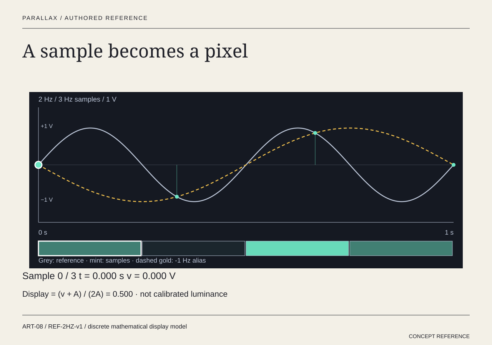
Visual job
Inspect how each ideal sine sample maps to a normalized display value.
Text reference
For each sample v, display value is (v + amplitude) / (2 × amplitude). The mapping is a decorative display model, not calibrated luminance or measured energy.
Scale and use
Discrete interactive study · static default, no autoplay or animation

PHYS-01
Keep orientation separate from obstruction
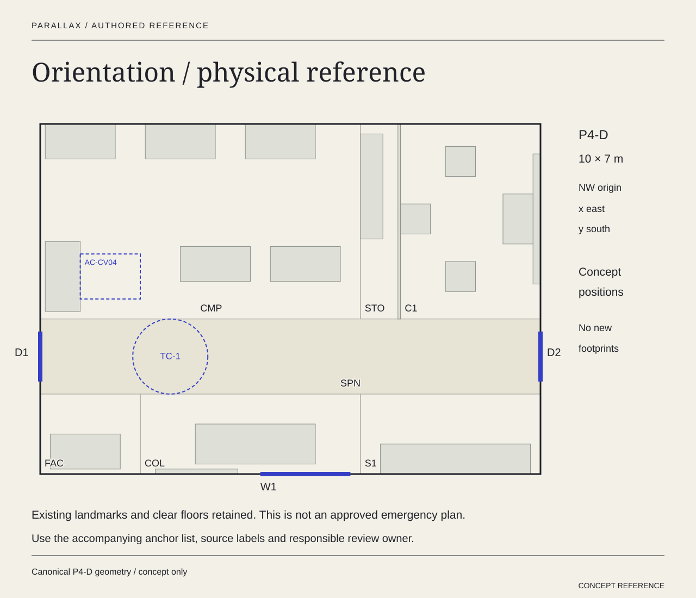
Proposal
Retain the concept circulation spine, exit openings, turning space and CV-04 approach floor. Use destination IDs on existing signs rather than adding floor-standing art in the route.
Review owner
Facilities/access lead + teaching technician
Before physical use
Survey the room, review concurrent movement, mounting and sight lines, and confirm local access/emergency procedures. Static geometric fit does not establish whole-class comfort or approved capacity.
Accessible fallback
Posted local procedures and readable destination/station IDs; plan/list remain available without AI or 3D.
Exact anchors
- D1: Main entry, W wall 4.15–5.15 m
- D2: Second exit, E wall 4.15–5.15 m
- SPN: Circulation spine, x 0, y 3.9, 10 × 1.5 m
- TC-1: centre 2.6, 4.65 m; radius 0.75 m
- AC-CV04: CV-04 approach, x 0.8, y 2.6, 1.2 × 0.9 m
PHYS-02
Landmarks before decorative warnings
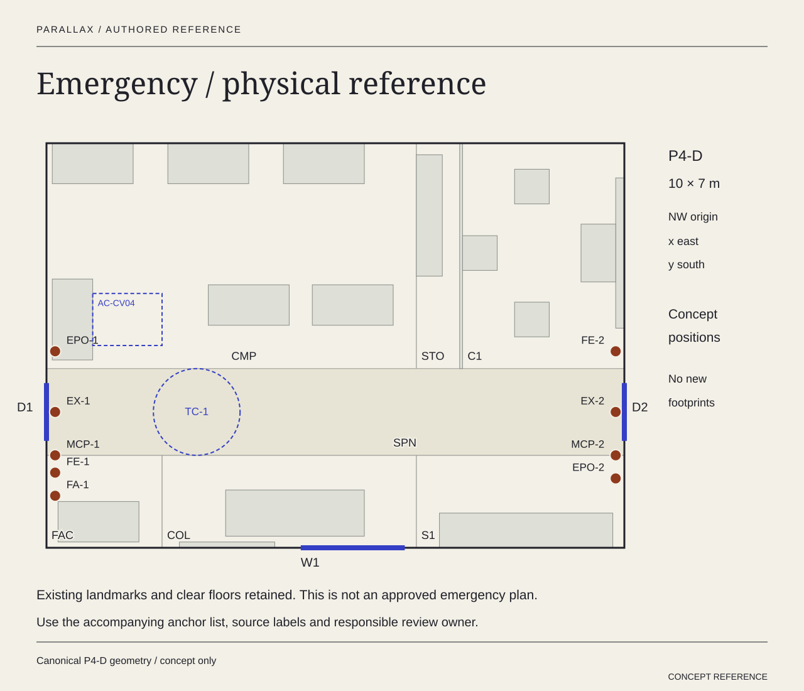
Proposal
Preserve the canonical equipment and exit landmarks. Separate electrical-control, capture-light/cable and exit-clearance review from artwork. Warning meaning comes from approved procedures, not an ambient colour effect.
Review owner
Institutional safety lead + qualified facilities staff
Before physical use
Confirm equipment type, suitability, access, emergency instructions, sign artwork and installations. These identifiers locate concept fixtures and give no equipment-use instruction or certified hazard assessment.
Accessible fallback
Actual posted emergency instructions and designated staff remain authoritative. This reference places no calls and operates no power or alarm.
Exact anchors
- FE-1: CO₂ extinguisher (electrical), x 0.15, y 5.7 m
- FE-2: CO₂ extinguisher (electrical), x 9.85, y 3.6 m
- FA-1: First-aid kit, x 0.15, y 6.1 m
- EPO-1: Emergency power-off, x 0.15, y 3.6 m
- EPO-2: Emergency power-off · S1, x 9.85, y 5.8 m
- MCP-1: Fire alarm call point, x 0.15, y 5.4 m
- MCP-2: Fire alarm call point, x 9.85, y 5.4 m
- EX-1: Exit sign + emergency light, x 0.15, y 4.65 m
- EX-2: Exit sign + emergency light, x 9.85, y 4.65 m
PHYS-03
Security cameras have a different purpose
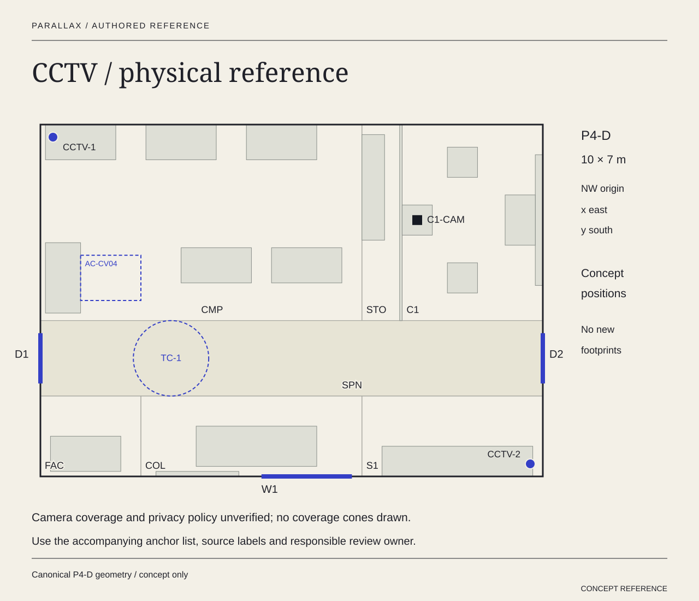
Proposal
Locate the two concept security-camera markers separately from the C1 experiment camera. The entry notice should identify the approved surveillance purpose and responsible contact before installation.
Review owner
Institutional security/privacy owner
Before physical use
Purpose, lawful access, retention, staff visibility, signage and actual camera coverage require institutional decisions. Coverage is unverified; no viewing cones, monitoring feed, biometric attendance or readiness inference is supplied.
Accessible fallback
Readable awareness notice and responsible contact after policy approval. Typed station/asset lookup does not require surveillance or camera permission.
Exact anchors
- CCTV-1: Security CCTV (separate from research capture), x 0.25, y 0.25 m
- CCTV-2: Security CCTV, x 9.75, y 6.75 m
- C1-CAM: tripod, x 7.2, y 1.6, 0.6 × 0.6 m
PHYS-04
An opening does not establish airflow
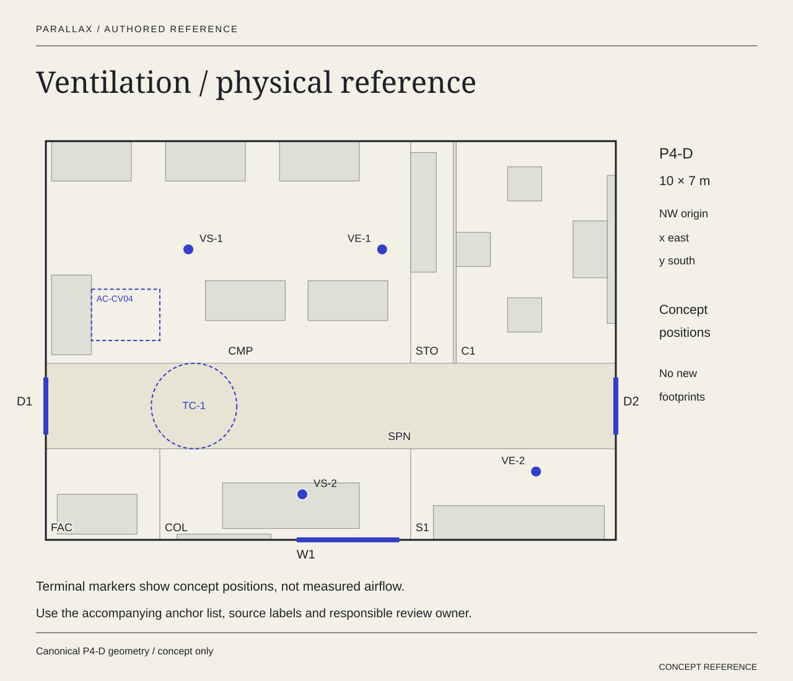
Proposal
Show the assumed operable W1 and concept supply/extract terminals. W1 daylight and drafts can affect C1 repeatability; the capture partition and shielding need joint method/facilities review.
Review owner
Facilities ventilation lead + faculty method owner
Before physical use
Occupied airflow, outdoor conditions, opening suitability and terminal performance remain unmeasured. D1/D2 are exit landmarks, not ventilation controls. No universal air-quality threshold or guaranteed cross-flow is asserted.
Accessible fallback
Approved manual facilities procedure and current source/freshness labels. Unconnected or stale readings cannot certify safe air.
Exact anchors
- W1: Daylight · operable, S wall 4.4–6.2 m
- VS-1: Ventilation supply diffuser, x 2.5, y 1.9 m
- VS-2: Ventilation supply diffuser, x 4.5, y 6.2 m
- VE-1: Extract grille · heat from stations, x 5.9, y 1.9 m
- VE-2: Extract grille, x 8.6, y 5.8 m
- C1: Controlled capture C1, x 7.2, y 0, 2.8 × 3.9 m
PHYS-05
A ceiling study, not a structure
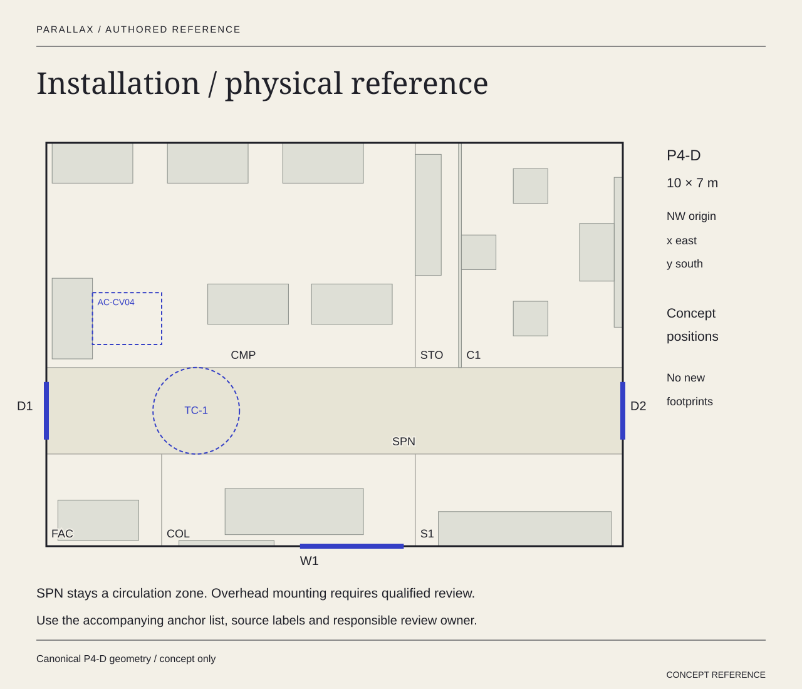
Proposal
Develop ARTWORK-CAND04 as a segmented-fin and replaceable-light candidate above the concept spine. Keep mounting separate from circulation, emergency lighting and capture task-light circuits.
Review owner
Facilities/structural lead + art maintainer
Before physical use
Suspension, clearance, stability, fire behaviour, glare, cleanability, driver access and replacement need qualified review. The schematic disassembly study specifies no fasteners, loads, products or fabrication dimensions.
Accessible fallback
Static waveform/sample poster and physical text labels convey the same subject without powered artwork. No quantified energy saving follows.
Exact anchors
- SPN: Circulation spine, x 0, y 3.9, 10 × 1.5 m
- COL: Collaboration & demonstration, x 2, y 5.4, 4.4 × 1.6 m
- C1: Controlled capture C1, x 7.2, y 0, 2.8 × 3.9 m
- W1: Daylight · operable, S wall 4.4–6.2 m
PHYS-06
Follow the class through the touchpoints
Proposal
Desk scenario: arrival at D1; match booked station; collect the complete kit from STO-1; rotate through C1/S1; retain work during a fault; return every component; review at COL; depart by the approved local route.
Review owner
Faculty session lead + technician
Before physical use
Simultaneous collection/return, queues, sight lines, cable movement, cleanup and assisted approach need a measured occupied-room review. The plan does not prove dynamic circulation or capacity.
Accessible fallback
Same station/asset IDs, manually posted instructions and named staff recovery. No second operational register or automatic attendance is created.
Exact anchors
- D1: Main entry, W wall 4.15–5.15 m
- CV-02: desk, x 2.1, y 0, 1.4 × 0.7 m
- STO-1: cabinet, x 6.4, y 0.2, 0.45 × 2.1 m
- C1: Controlled capture C1, x 7.2, y 0, 2.8 × 3.9 m
- COL: Collaboration & demonstration, x 2, y 5.4, 4.4 × 1.6 m
- S1: Signal acquisition bench S1, x 6.4, y 5.4, 3.6 × 1.6 m
- D2: Second exit, E wall 4.15–5.15 m
S-01 / D1
PARALLAX
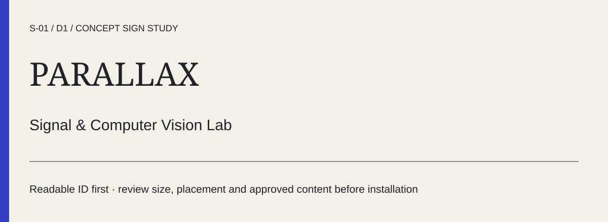
Signal & Computer Vision Lab
Identify the subject at the main entry.
Review size, placement and approved content before installation.
Full-size sign masterS-02 / C1
C1 · Controlled capture
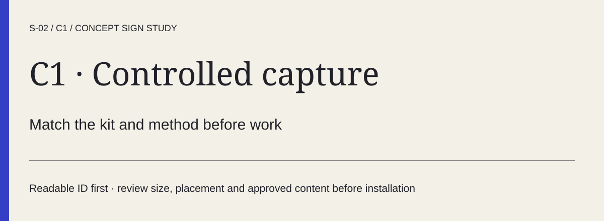
Match the kit and method before work
Identify the destination without implying equipment readiness.
Review size, placement and approved content before installation.
Full-size sign masterS-03 / CV-02
CV-02
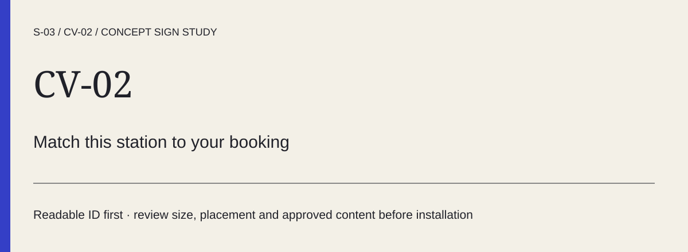
Match this station to your booking
Preserve the canonical station identifier.
Review size, placement and approved content before installation.
Full-size sign masterS-04 / C1-CAM
C1-CAM
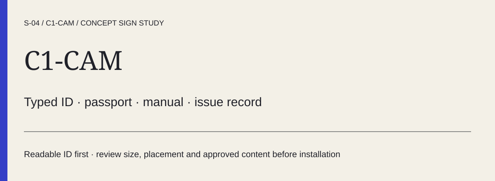
Typed ID · passport · manual · issue record
Provide a readable equipment lookup independent of QR/camera permission.
Review size, placement and approved content before installation.
Full-size sign masterS-05 / C1-CAM
C1-CAM · restricted
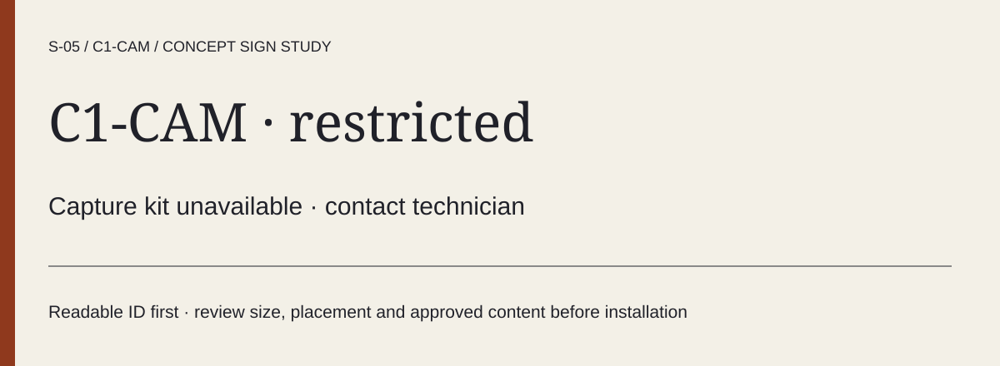
Capture kit unavailable · contact technician
Show an allowed equipment consequence without private fault or person details.
Review size, placement and approved content before installation.
Full-size sign masterS-06 / FE-1
Know the landmark
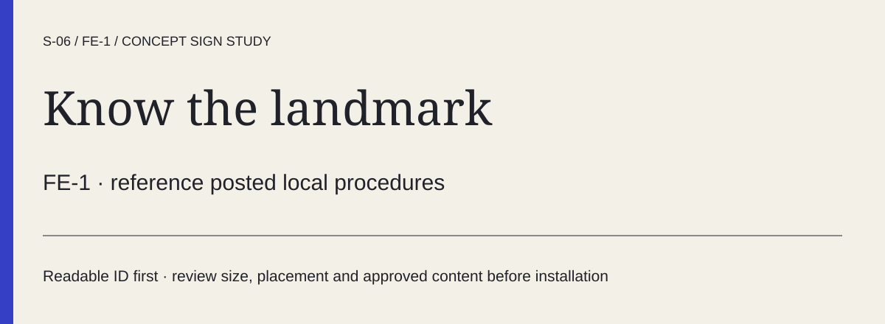
FE-1 · reference posted local procedures
Identify an existing safety point; this study is not approved emergency signage.
Review size, placement and approved content before installation.
Full-size sign masterInteractive study equivalent
3 Hz = 4 samples including both endpoints. For v = A sin(2πft), display = (v + A)/(2A). A = 1 V, f = 2 Hz, duration 1 s. Generated model, not calibrated luminance.
20 Hz = 21 samples including both endpoints. For v = A sin(2πft), display = (v + A)/(2A). A = 1 V, f = 2 Hz, duration 1 s. Generated model, not calibrated luminance.
Both exported masters select sample 0. No autoplay. ART-07 is a reusable visual master; the final report and deck follow in U10. Optional AR/voice remain future extensions.